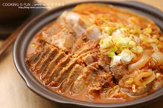

돼지고기김치찜 끝판왕
레시피 동영상
유사한 동영상 더보기
조리방법
- 돼지고기는 두툼하게 썰어 주시고 파와 청양고추는 어슷하게 썰어주세요
- 냄비에 썰어 놓은 돼지고기를 넣고 그 위에 청양고추와 김치 반포기를 올려주세요 그런 다음 쌀뜨물 3컵(종이컵계량)을 부어주세요 (요때 반드시 김치는 고기 위에 포개듯이 고기가 보이지 않게 덮어 주셔야 고기 육즙이 고기에 스며들어 부드럽고 맛있는 김치찜이 완성 된답니다.)
- 이제 분량의 양념(다진마늘 1큰술, 설탕 반 큰술, 고춧가루 1큰술, 김칫국물 3국자)를 넣어 주세요
- 그리고 뚜껑을 닫고 고기와 김치가 푹 쪄지도록 센불에서 끓여주시고 국물이 끓어 오르면 중불로 줄여 30분 ~ 40분 정도 푹 졸여주세요 중간 중간 국물을 끼얹어 김치에 양념이 골고루 스며들게 해주세요